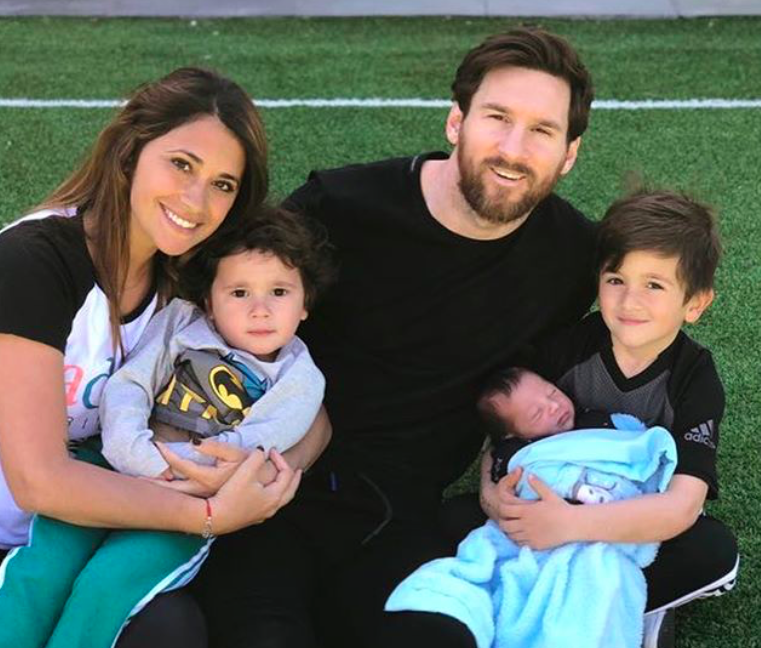
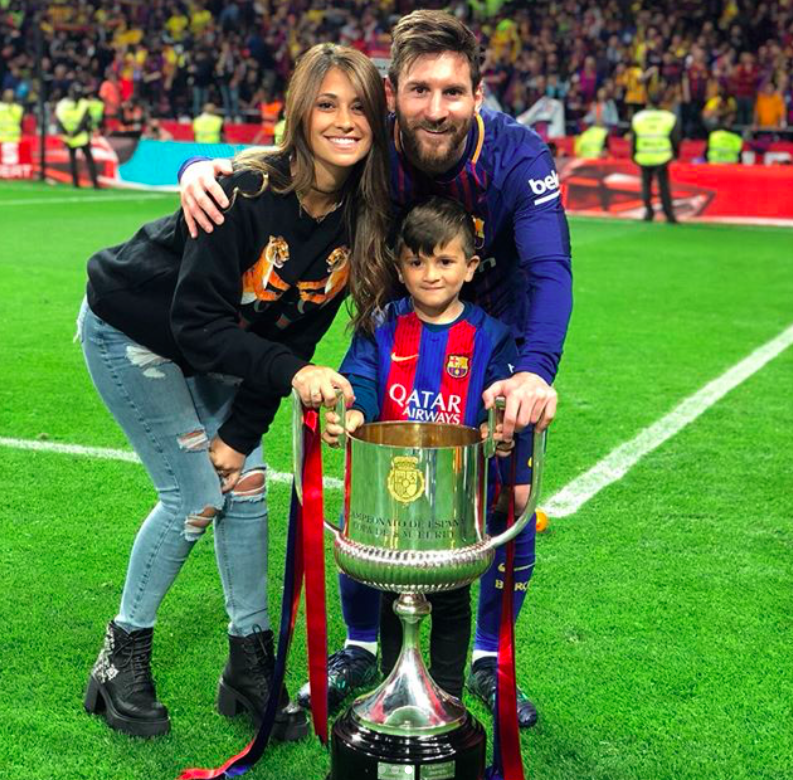
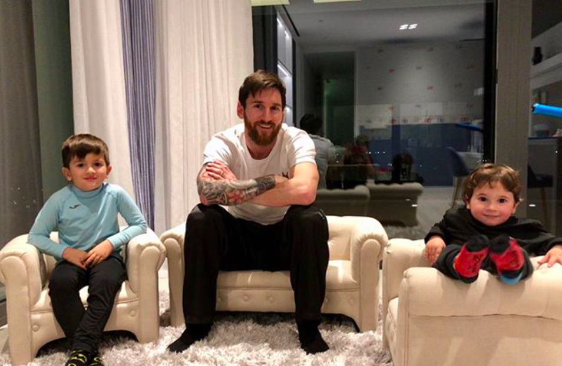
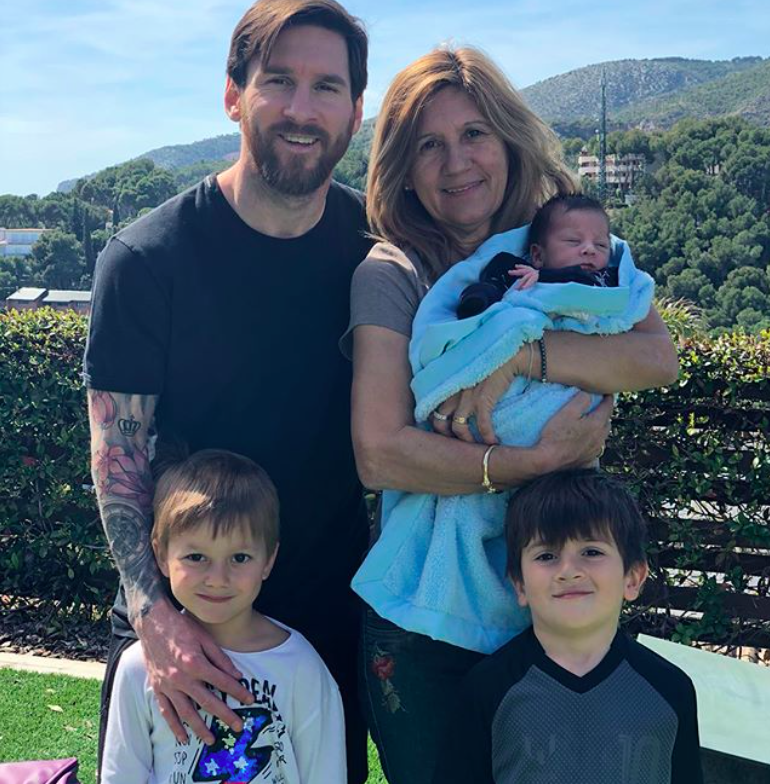

О жизни звездных детей знаменитого футболиста Лионеля Месси поклонники узнают из его странички в Инстаграм. Он постоянно публикует фотографии своей большой семьи, в которой трое сыновей и жена Антонелла Рокуццо. Интерес прессы и поклонников понятен, ведь Месси – один из самых знаменитых игроков «Барселоны», воспитавшей и развившей его талант.
Аргентинец успешно защищает свою страну и на мировой арене, он является капитаном сборной с 2005 года. Красота забитых им голов, точность, с которой он поражает ворота, виртуозная техника по достоинству оценена. Он обладатель пяти «Золотых мячей», а количество личных и командных наград стремиться к сотне. И все это за недолгую карьеру: 24 июня он встретит свой 31-ый день рождения.
Но самым лучшим событием, что случилось в его жизни, он называет не признание его как футболиста, а отцовство. У игроков команды даже есть негласное соревнование за звание самого лучшего отца. Они умеют демонстрировать не только высокое качество игры, но и любовь к своим детям. И Лео во многом в этом им стал примером.
Имя его первенца вытатуировано на его левой ноге. Месси — левша, именно ей он забивает голы, количество которых перешагнуло за 600. Здесь же две детские ручки, которые обнимаю ногу отца. У матери Тьяго тоже есть тату с именем ребенка – на ладони.
С первых дней жизни Тьяго – один из самых популярных малышей в мире футбола. Он вместе с папой или мамой не сходит с обложек спортивных и гламурных журналов. Несмотря на то, что в семействе Месси не бывает скандалов, репортеры с удовольствием «охотятся» за ним, продавая положительный образ отца и мужа ничуть не хуже, чем похождения некоторых голливудских звезд. Удалось ли Лео изменить отношение к семье среди звезд футбола? Вряд ли у него была такая цель, но его коллегам тоже нравится показывать себя с хорошей стороны. Даже принято после матча обнимать своих детей и жен, многие из которых самые преданные болельщики.
Впервые Лео вышел на поле с Тьяго в 2013 году после финальной игры «Лиги чемпионов». Годовалый малыш разделил победу с отцом, сидя у него на руках, и даже позволил папе попользоваться пустышкой. Кадр облетел все мировые издания, и таких трогательных снимков большое количество. Лео и в интервью всегда скажет несколько слов о детях. От него мы знаем, что старший любит автомобили, мотоциклы больше, чем футбол, потому что, играя, быстро устает.
Лео был в роддоме в день рождения малыша, пропустив утреннюю тренировку накануне матча за звание чемпиона страны. 2015 год вообще принес Лео много успехов, в том числе пятый «Золотой мяч». Второго сына назвали Матео, его имя красуется на плече футболиста, а мама сделала тату на второй ладони.
В феврале Лео показал, как вырос малыш, видео он опубликовал в Инстаграм. На нем мальчик смотрит мультфильм и повторяет движения, которые показывают мультяшные персонажи. А еще он обожает смотреть футбол. Об этом в интервью рассказал Месси, отмечая, что у его сыновей разный характер. Матео досталось от отца неприятная характеристика: «паршивец». Но сказано это было с нескрываемой нежностью – мальчик растет подвижным и шустрым ребенком.
Интерес к футболу в столь юном возрасте отец связывает с генами. Он надеется, что именно Матео пойдет по его стопам и станет успешным игроком.
Ожидая появление своего третьего сына, Месси пропустил матч с испанской «Малагой», который состоялся 10 марта этого года. В этот день в его Инстаграм появилась фото маленькой ручки новорожденного, которая держится за папин палец и надпись о том, что прошло все идеально, все очень счастливы.
Недавно Лео признался, что малыш лишил его традиционной сиесты, и он готов сбежать на сборы к себе на родину. Так и получилось – Месси отправился в Аргентину, чтобы подготовиться к чемпионату мира-2018. Именно он принес победный гол своей команде, вывел ее на третье место в турнире, чем обеспечил попадание на мировой чемпионат. Он сказал, что это была мечта не только команды, но и всей страны.
Первая игра сборной команды пройдет 16 июня в Москве, но до этого времени Месси успеет побывать с семьей – его талисманом и камертоном, который настраивает его на все важные игры.
